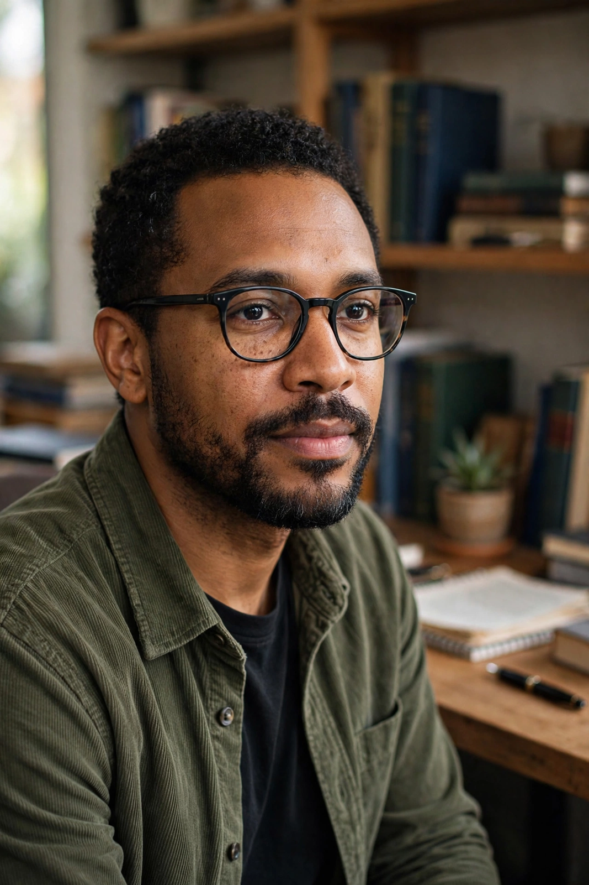

Ta-Nehisi Coates
| Ta-Nehisi Coates | |
 | |
| Born | Ta-Nehisi Paul Coates, September 30, 1975, Baltimore, Maryland, U.S. |
|---|---|
| Occupation | Writer, journalist |
| Alma mater | Howard University (attended) |
| Notable works | Between the World and Me; "The Case for Reparations"; The Water Dancer |
| Awards | National Book Award (2015); MacArthur "Genius" Fellowship (2015) |
Ta-Nehisi Paul Coates (born September 30, 1975) is an American author and journalist. He gained a wide readership during his time as national correspondent at The Atlantic, where he wrote about cultural, social and political issues, particularly regarding African Americans and white supremacy.
Early life and career
Coates was born in Baltimore to a father who was a Vietnam veteran and former Black Panther who ran a publishing company, and grew up during the crack epidemic. He attended Howard University but left before graduating to pursue writing, working at the Washington City Paper and Time before joining The Atlantic. His memoir The Beautiful Struggle (2008) chronicled his coming of age in Baltimore.
Major works
His 2014 essay "The Case for Reparations" reignited national debate over reparations for slavery. Between the World and Me (2015), a book written as a letter to his son about race and the body in America, won the National Book Award for Nonfiction and became a bestseller; Toni Morrison called Coates the successor to James Baldwin. His debut novel, The Water Dancer (2019), tells of an enslaved man in Virginia with a mysterious power of "conduction". He also wrote Marvel's Black Panther and Captain America comic series. We Were Eight Years in Power (2017) collected his Obama-era essays. In 2024 he published The Message, essays on writing and place, including the West Bank.
Awards
Coates received a MacArthur Fellowship in 2015. He has taught at New York University and joined the faculty of Howard University, holding the Sterling Brown Endowed Chair in the English department.